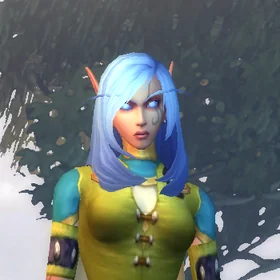

The Mage companion for World of Warcraft: Forever
Parzelle's Addon
Named for Parzelle Starfall, High Order Skyborne Mage
Arcane, Fire or Frost: pick your path and every page follows it. What to cast, what to wear, where to quest, what to train, where to teleport and everything about the class, in one window that shows you what to do next.
 Arcane
Arcane Fire
Fire Frost
Frost
The Mage Buttons
Conjure, buff and hand out: water, food, a mana gem and Arcane Intellect, one press at a time.
One button. Never out of water.
A small button sits on your screen and shows how much conjured water, food and mana gem you have in your bags. Each press casts the highest rank you know of whatever you're shortest on, and the button moves straight on to the next thing. Keep pressing until you're stocked up.
What it makes, in order
- A mana gem, if you have none.
- Water, until you reach your target.
- Food, until you reach your target.
It skips
- anything you're already stocked on (targets are yours to set in Settings)
- anything you can't conjure yet: it uses only the spells you know
Make it yours
- No key is bound by default. Pick one under Settings › Mage buttons › Set key, or type
/parzelle conjure key. Shift, Ctrl, Alt and extra mouse buttons work; Super combos are never used. - It shares a small bar with the Arcane Intellect and Hand out buttons. Drag the strip above them to move it.
/parzelle conjureshows or hides it. - It appears once you know a conjure spell. When you're low, Home and a line after login remind you.
Blizzard's rules, kept
- One press, one cast. The addon never casts on its own, and it adds no macros to your macro list.
- Out of combat only: in combat the button is disarmed. Conjure between pulls.
Next to it on the bar
- Arcane Intellect, buff next: one press buffs the nearest friendly player who's missing it: you, then your group, your target, then nearby players. Warriors and Rogues are skipped. If you know Arcane Brilliance, it's used when three or more of your party need the buff.
- Hand out: one click opens a trade with your target, or with whoever in your group is lowest on mana and hasn't had any yet. The trade window fills itself with water and food they can use, and you press Trade. Right-click lists your group with everyone's mana. Group members who open a trade with you get the same offer.
A web demo of the addon's logic, not a screenshot of the game. The C key is just for the demo: in game you choose your own key.
Screenshots from Parzelle's game, cropped so no other players' names show.
Quest Log
Everything Parzelle's Addon does for your Mage, one quest at a time.
Know What to Do Next
Every time you open the window, Home tells you what matters now: the spells waiting at your trainer, how close you are to your riding gold, your next class quest, and anything that needs attention, such as a missing buff, low conjured stock, an upgrade in your bags or news you haven't read.
Objectives
- See what to train now and at your next trainer visit
- Track your savings for riding at 40 (100g) and 60 (1000g)
- Never miss your next Mage class quest
How it works
Three cards across the top: what your trainer has for you now (or at your next visit), your savings toward Apprentice Riding at 40 and Journeyman at 60 with a progress bar, and your next class quest.
Below them, Needs attention lists missing buffs, conjured food and water running low, upgrades sitting in your bags, unread news and new lessons, each with a button that takes you there. Next to it: your rotation at a glance.
Rewards
Cast the Right Spell
Priority lists for solo leveling, dungeons and raids, for each spec, filtered to the spells you can actually cast at your level. An optional on-screen helper suggests your next spell and keeps your cooldowns in view. After each fight you get a short summary and a mana tip. It only ever advises: nothing casts by itself.
Objectives
- Follow Solo, Dungeon and Raid priorities for Arcane, Fire and Frost
- See only spells your level and talents allow
- Read the Crowd control and Mana tabs before a hard pull
How it works
Each spec has Solo, Dungeon and Raid lists, plus Crowd control and Mana tabs. A step you can cast shows normally; one your level allows but you haven't trained yet is tagged Train it; spells from talents you haven't taken stay hidden until they apply.
The helper shows the next spell large with the two after it, plus a row of cooldowns. After a fight, chat gets a line of what you cast, the mana you spent and a tip, like finishing mobs with your wand so your mana comes back.
Rewards
Water for the Road
One small button on your screen counts your conjured water, food and mana gem. Each press conjures whatever you're shortest on, at the highest rank you know: a gem if you have none, then water up to your target, then food. Bind it to any key you like.
Objectives
- Restock with a single press between pulls
- Set your own targets and key in Settings
- Never sit down to drink store-bought water again
How it works
See the Conjure Button above for the full order and a demo you can press.
Rewards
One Sheep at a Time
Cast Polymorph and the on-screen helper shows who you sheeped and how long it has left, and warns you if it breaks early. Frost Nova, Counterspell and Cone of Cold cooldowns sit right next to it.
Objectives
- Keep an eye on your Polymorph's time left
- Hear about it the moment it breaks early
- Know when Frost Nova and Counterspell are ready
How it works
The tracker reads your own Polymorph on your target, focus, mouseover and nameplates. If the game hides the timer, the helper says so instead of guessing. The Crowd control tab on Rotation has the same view plus tips.
Rewards
Upgrade or Vendor?
Hover any item and the tooltip says whether it beats what you're wearing for your spec, what improves and what you'd lose, and Equip this when it's worth it. Upgrades sitting in your bags glow, and a new one gets a quick alert.
Objectives
- Compare every item with your equipped one, for your spec
- Count fire, frost or arcane damage only for the spec that uses it
- Spot upgrades in your bags at a glance
How it works
Each spec's stat priority comes from the guides, and the addon turns it into weights for your spec. Fire damage counts for Fire, frost damage for Frost and arcane damage for Arcane; damage for another school is shown but not counted. Rings and trinkets are compared against the weaker of your two.
Equip this only appears for an upgrade of 1% or more that you can wear right now. Otherwise you'll see "Upgrade once you reach level N".
Rewards
Where the Loot Drops
The Gear page lists the best recommended item for each slot at your level. Click one to see who drops it and how often, which quest gives it and who starts that quest, or what it takes to craft. Press Mark on map to put a pin on the quest giver or the dungeon entrance.
Objectives
- Browse the best gear for your level, slot by slot
- Find the boss, the quest giver or the recipe
- Pin it on your map and follow the arrow
How it works
The views are For my level, Best overall, By bracket, Consumables and Weights.
Item sources come from the Icy Veins Forever database. Dungeon entrances come from the game's own map, so the pin lands where the game says the entrance is. If a source isn't published yet, the page says so.
Rewards
The Road to Sixty
Your path laid out by level: upcoming trainer visits and milestones, zones and dungeons for your level and faction, every spell rank and when you learn it, your Mage class quests, and your riding trainer and first mount.
Objectives
- Plan your next trainer visits
- Find zones and dungeons for your level and faction
- Complete your class quests and claim your first mount
How it works
Path lists your next trainer visits and milestones by level. Zones & dungeons highlights your bracket, Trainer shows every rank and when you learn it, and Class quests ticks off the ones you've done. Riding & gold shows your trainer, your vendor and your first-mount quest. Portals & teleports is next in the log.
Rewards
Portals & Teleports
Every teleport and portal for your faction, with the level you learn it, whether you know it, and the reagent it needs. A small travel bar gives you one button per teleport or portal you know: one click, one cast.
Objectives
- See which cities you can reach, and when
- Count your reagents before you need them
- Open the travel bar and click your way home
How it works
Only your own faction's cities are listed. Reagent counts come from your bags; where the research couldn't confirm that Forever still uses a reagent, the page flags it as not confirmed for Forever instead of guessing.
The travel bar is its own small frame, filled and opened out of combat. And a tip from the page: don't set your hearthstone to a city you can teleport to. Bind it to the inn where you're questing.
Rewards
A Build You Can See
Recommended builds for your spec, drawn on Forever's own talent trees with points per talent and the in-game tooltips. With dual spec, talent spec one and two each keep their own Mage profile, and the addon follows whichever you switch to.
Objectives
- See every recommended build on the real talent trees
- Read what each build takes, talent by talent
- Switch specs and let the addon follow
How it works
Pick a build and it appears on Forever's three trees, with points per talent and the game's own tooltip on hover. Below it, a list says what the build takes. A build that no longer fits the current trees shows its link instead of a wrong picture.
Rewards
Learn the Mage
Every spell and talent explained: what it does, when to use it and which rank. Then how the class works, including Forever's new Comprehension tradeskill, playing in a group, leveling each spec and the common mistakes. New lessons unlock as you level, and the first time you learn a spell you get a short hint.
Objectives
- Read about every spell and talent
- Unlock lessons as you level
- Learn your role in a group
How it works
The sections are Lessons, Spells, Talents, How the class works (mana, downranking, crowd control, Comprehension and more), In a group, Leveling (tips for each spec) and Common mistakes. Anything the sources couldn't confirm is marked.
Rewards
Nothing Forgotten
Reminders for Arcane Intellect, your armor spell, Ice Barrier, your conjured stock, reagents and your wand. What's new collects Forever and Mage changes, and an optional companion script on your PC keeps that list current. Every fact carries its source, and where the sources disagree or say nothing, the addon tells you instead of guessing.
Objectives
- Keep your buffs, armor and wand in order
- Catch every Mage change in What's new
- Check the source behind any fact
How it works
Reminders appear on Home and as a small pop-up out of combat; choose which ones in Settings. Each page has a Sources & notes link with the sources it uses and any open questions. The search box at the top of the sidebar finds any spell, talent, item, quest or dungeon.
Rewards
The Mage Who Started It All
Every addon has a first player. This one has a name.
Meet Parzelle Starfall
Parzelle Starfall is the Mage this addon is named for: a High Order Skyborne who started out on Zephras Isle. At level 8 she hadn't picked a spec yet.
Parzelle's Addon is built for her and tested on her. The screenshots on this page are hers: her Home screen at level 8, her first lessons, her Frost talent path, and the mage bar buffing her with Arcane Intellect.
If you see a Skyborne Mage handing out water and opening portals, say hello.
May your mana never run dry.
Claim Your Loot
Releases are published on GitHub Releases. For World of Warcraft: Forever only.
omaforge update -c forever keeps it current
omaforge install -c forever github:ninepointlabs/parzelles-addonWorld of Warcraft/_forever_/Interface/AddOns/ParzellesAddon/reload
/parzelleEvery release, with its notes: GitHub Releases. Source: ninepointlabs/parzelles-addon.
Classic Era and retail clients won't load it: it's built for Forever's Interface 16001.
The Tavern
Questions, answered by the innkeeper.
Well met, traveler! Pull up a chair. No need to buy water, I hear you make your own. What would you like to know?
Is it allowed?
Yes. It's advice and information, and it plays by Blizzard's addon rules. The only things that ever cast a spell are your own clicks or key presses on the Conjure button and the travel bar, one cast each, out of combat. No macros, nothing automatic.
Will it play the game for me?
No. Blizzard doesn't allow that, and it wouldn't be much fun. The rotation helper suggests, and the Polymorph tracker watches. You press the buttons.
Does it work on Classic Era or retail?
No. It's built for World of Warcraft: Forever only, and other clients won't load it. That's on purpose: Forever's spells, talents, quests and gear all differ from Classic.
Which specs does it support?
Arcane, Fire and Frost. Pick one and every page follows it. With dual spec, talent spec one and two each keep their own profile, and the addon switches when you do.
Why don't the buttons have keys?
None is bound by default, so it never steals a key you already use. Pick one under
Settings › Mage buttons › Set key, or type
/parzelle conjure key or /parzelle buff key. Super combos are never offered: on many Linux
desktops they belong to the desktop.
Where does the information come from?
From Blizzard's own articles and development notes, Icy Veins and Wowhead. Every fact keeps its source and the date it was checked: look for the Sources & notes link on each page. Where the sources disagree or say nothing yet, such as which reagents Forever's portals still need, the addon says so instead of guessing.
How does What's new stay current?
Addons can't go online from inside the game. New releases carry updated research,
and an optional companion script on your PC can refresh the list in between: it
reads public news feeds and writes a file the addon shows after a
/reload.
Is this made by Blizzard?
No. Parzelle's Addon is an unofficial, free and open source fan project by Nine Point Labs, from the makers of My Azeroth Life and OmaForge. It isn't affiliated with or endorsed by Blizzard Entertainment.